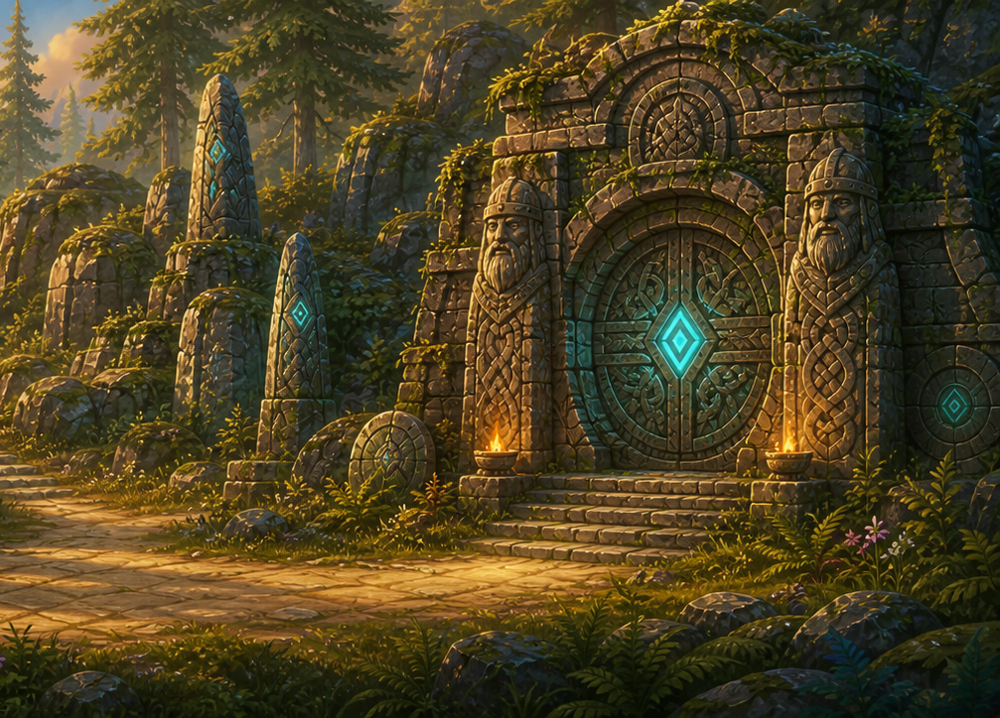
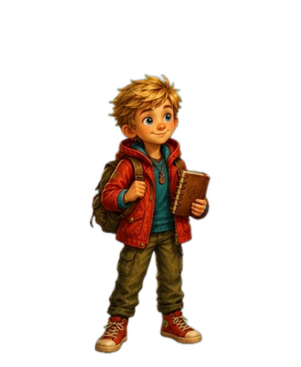
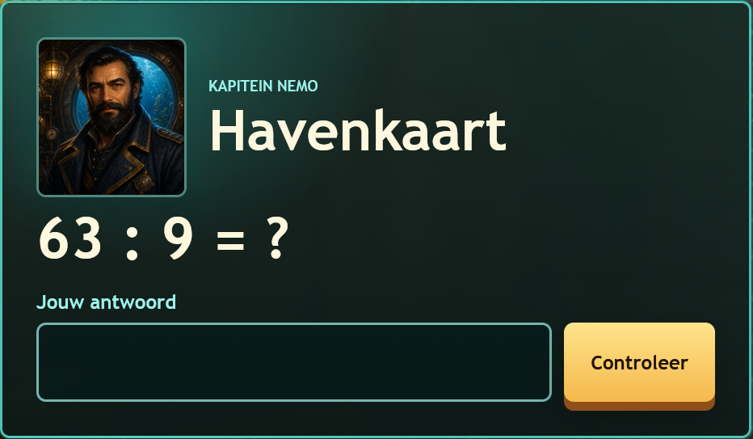

MAGIC & MOTION · RUNENPOORT
Knowledge in motion
A vessel opens. Knowledge finds its way home.



VISUAL MOCKUP · NO ANSWER REQUIREDRUNENPOORT 01 / KNOWLEDGE TRANSFER STUDY
Continuous exit indicator
Idle vessels
MAGIC & MOTION · RUNENPOORT
A vessel opens. Knowledge finds its way home.



VISUAL MOCKUP · NO ANSWER REQUIRED